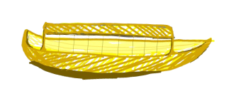
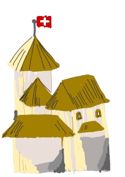
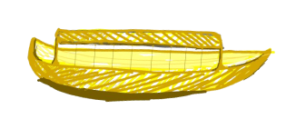
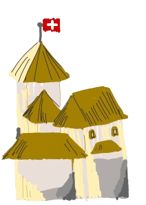

스위스 명소를 소개합니다
s w i t z e r l a n d
가보고 싶은 스위스 명소
-
1. 융프라우
# 산악열차 # 트레킹코스 -
2. 루체른
# no.1 관광도시 #카펠교 -
3. 제네바 호수
# 유럽에서 가장 큰 호수 -
4. 몽트뢰
# 재즈페스티벌 #시옹성
s w i t z e r l a n d
가보고 싶은 스위스 명소
s w i t z e r l a n d
한눈에 보는 스위스 관광지
 




융프라우산
산악열차
레만 호수 크루즈
시옹성